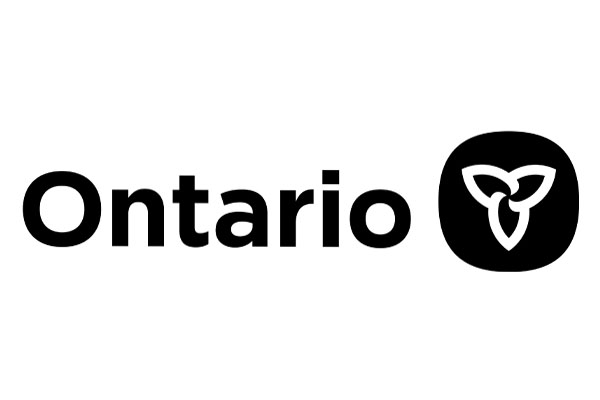
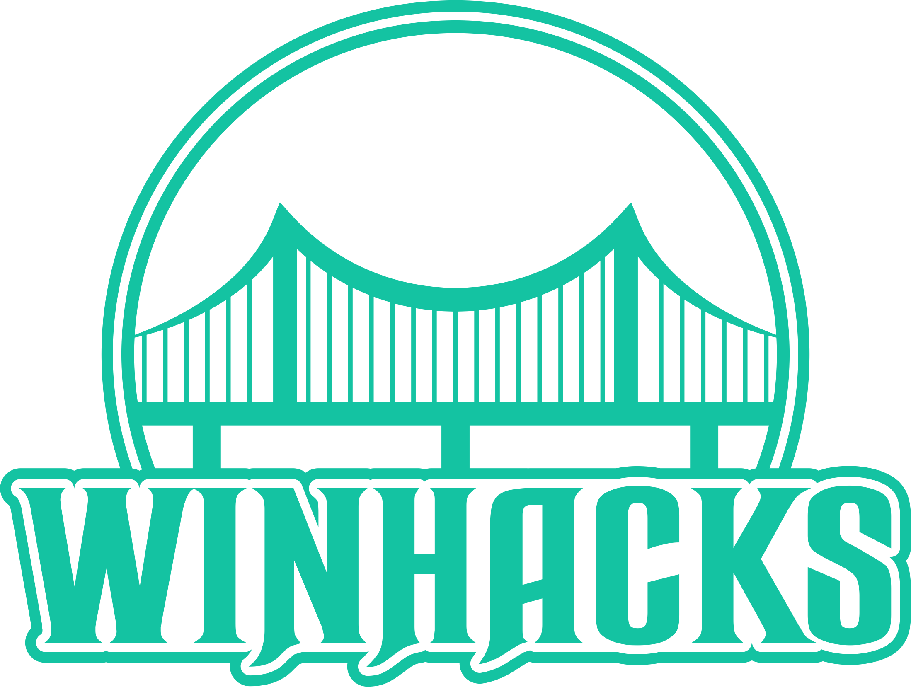

Hi,
I am Abdulaziz Khan
A Comp Sci Student
About
I am Abdulaziz
A little bit about myself I am currently a 3rd year student at the University of Windsor completing a bachelors of computer science. I recently completed an internship as a Data Science Intern at the Ontario Treasury Board Secretariat. I enjoy playing Basketball and watching Hockey/Basketball!
Skills
Profesional Skills
I have worked with many different programming languages and tools but my main 3 would be Java, Python and C!
Java
95%
Python
85%
C/C++/C#
70%
Work

During the duration of the summer 2020 semester I was work for the Ontario Tresaury Board as a Data Science Intern. I worked with a variety of technologies such as Python,SQLite and Scrapy.
May 2020 - September 2020

Organized the University of Windsor First ever Hackathon.Helped to coordinate logistics of the event such as ceremonies, travel arrangements, etc. Met with multiple companies to pitch the idea of the hackathon to gather sponsorship’s.
Sept 2019 - March 2020
Projects
One of the projects that I worked on during my time at the treasury board was the job banks project which was to create a platform that would scrape different jobs from the Canada job banks website and store them in one location for easy navigation. I constructed a Python script that uses Scrapy to scrape over 35,000 jobs within the official Canada job banks website
May 2020 - August 2020
During my time as a data science intern at the treasury board I helped to create a program that would conduct a sentiment analysis on various different unions. Leveraged 1M+ tweets to develop sentiment analysis model that helped to improve union relations and negotiations using Python and Scrapy.
May 2020 - August 2020
One of the projects that I created was a simple game in which you jump onto various platforms to reach the end without falling off the platform or touching any of the red boxes. To create this game I used Unity and C#.
Sept 2020 - Oct 2020